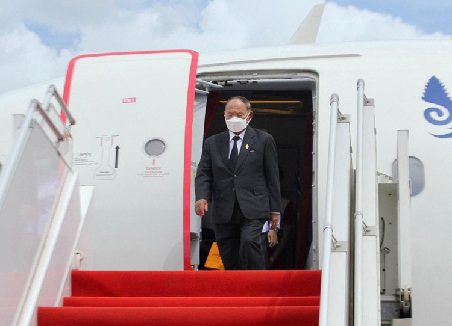

អភិបាលកិច្ច

បេសកកម្មក្រសួងអភិវឌ្ឍន៍ជនបទ ត្រូវបានបង្កើតឡើងដោយច្បាប់នៃព្រះរាជាណាចក្រកម្ពុជាថ្ងៃទី ២៤ ខែ សីហា ឆ្នាំ២០២០ ក្រសួងអភិវឌ្ឍន៍ជនបទ ត្រូវបានបង្កើតឡើងដោយច្បាប់នៃព្រះរាជាណាចក្រកម្ពុជា ដែលប្រកាសឲ្យប្រើដោយព្រះរាជក្រមលេខ នស/រកម/០១៩៦/១២ ចុះថ្ងៃទី២៥ ខែមករា ឆ្នាំ១៩៩៦។ វ .. |

ឯកឧត្តម សាយ សំអាល់ រដ្ឋមន្រ្តីក្រសួងបរិស្ថាន ដឹកនាំកិច្ចប្រជុំថ្នាក់ដឹកនាំថ្ងៃទី ២៤ ខែ សីហា ឆ្នាំ២០២០ នាព្រឹកថ្ងៃពុធ ៨រោច ខែស្រាពណ៍ ឆ្នាំជូត ទោស័ក ព.ស.២៥៦៤ត្រូវនឹងថ្ងៃ១២ ខែសីហា ឆ្នាំ២០២០ នៅទីស្តីការក្រសួងបរិស្ថាន ឯកឧត្តម សាយ សំអាល់ រដ្ឋមន្រ្តីក្រសួងបរិស្ថាន ដឹកនាំកិច្ចប្រជុំថ្នាក់ដឹកនាំ ដើ.. |

រដ្ឋមន្ត្រីក្រសួងយុត្តិធម៌ថ្លែងកោតសរសើរថាក្រមបរិស្ថានមានភាពប្រទាក់ក្រឡាគ្នាថ្ងៃទី ២៤ ខែ សីហា ឆ្នាំ២០២០ រដ្ឋមន្ត្រីក្រសួងយុត្តិធម៌ ឯកឧត្តម អង្គ វង្សវឌ្ឍនា ថ្លែងកោតសរសើរចំពោះការបង្កើត ក្រមបរិស្ថានធនធានធម្មជាតិរបស់ក្រសួងបរិស្ថាន ដែលជាឧត្តមប្រយោជន៍របស់ពលរដ្ឋកម្ពុជាក៏ដូចជាប្រទេសកម្ពុជាទាំងមូ .. |

សម្ដេចប្រធានរដ្ឋសភា អញ្ជើញត្រលប់មកដល់មាតុប្រទេសវិញ បន្ទាប់ពីបញ្ចប់ទស្សនកិច្ចថ្ងៃទី ២៤ ខែ សីហា ឆ្នាំ២០២០ សម្ដេចអគ្គមហាពញាចក្រី ហេង សំរិន ប្រធានរដ្ឋសភា នៃព្រះរាជាណាចក្រកម្ពុជា អញ្ជើញដឹកនាំគណៈប្រតិភូ ជាន់ខ្ពស់រដ្ឋសភា ត្រលប់មកដល់មាតុប្រទេសវិញ នារសៀលថ្ងៃទី.. |